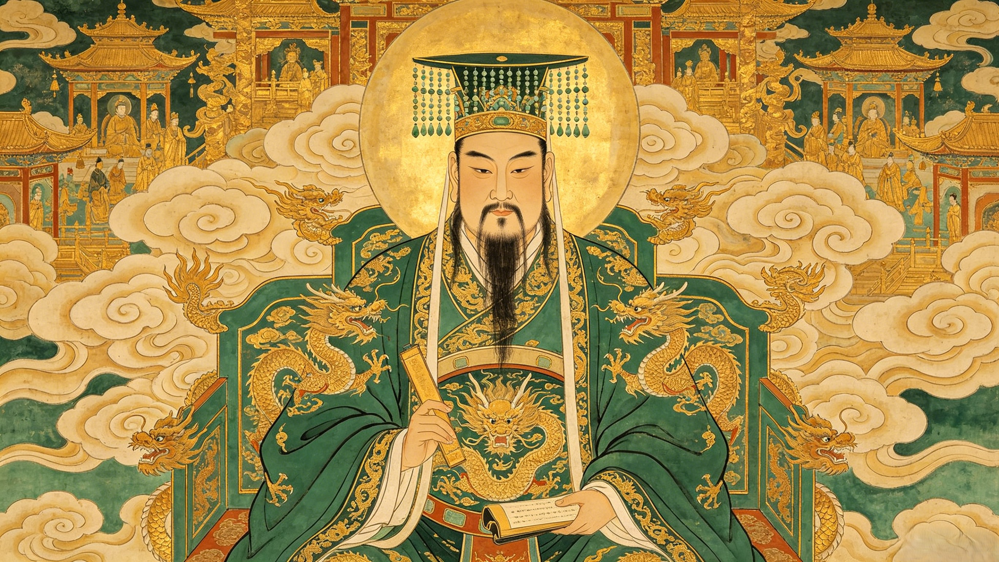

Supreme Ruler of Heaven
玉皇大帝
He governs all of Heaven, Earth, and the Underworld. Cultivated for 1,750 kalpas — each kalpa lasting 129,600 years — before ascending to the Dragon Throne. No being in Chinese mythology, not even the Buddha, stands higher in the celestial hierarchy.
The highest ruler of the Three Realms — Heaven, Earth, and the Underworld. Every god, dragon king, city god, and mountain spirit answers to his edicts. His word is cosmic law.
Heaven mirrors imperial China. His court is a celestial bureaucracy with ministries, ranks, and officials — the Four Heavenly Kings, Thunder Ministry, and countless departments governing every aspect of existence.
He dispenses justice across the universe. Sentences range from banishment (Sun Wukong, Zhu Bajie, Sha Wujing) to execution (the dragon prince Ao Lie). No appeal exists beyond the Dragon Throne.
Before he was emperor, he was Zhang Youren — a mortal prince on Earth. He cultivated the Dao through 1,750 kalpas, each spanning 129,600 years. When his cultivation was complete, the Three Pure Ones elevated him to the highest throne in existence.
From the Dragon Throne in the Cloud Palace, he presides over a court of thousands. Below him: the Four Heavenly Kings, the Thunder Ministry, the Dragon Kings of the Four Seas, the City Gods, and every spirit who holds office in the celestial hierarchy.
When Sun Wukong rebelled, the Jade Emperor tried diplomacy, then 100,000 celestial soldiers, then Erlang Shen — and finally called upon the Buddha himself. His judgments echo through every myth: banishment, incarnation, redemption. Heaven's law is absolute.
Zhang Youren's 1,750 kalpas of practice, his mortal origins as a prince, and his elevation by the Three Pure Ones to the supreme throne of heaven.
The divine bureaucracy that runs the universe — ministries, ranks, heavenly kings, dragon kings, thunder marshals, and how heaven mirrors imperial China.
The Monkey King's havoc in heaven, Erlang Shen's duel, the Buddha's intervention — the Jade Emperor's greatest trials as ruler of the cosmos.
The 9th day of the lunar new year, the Jade Emperor's birthday, Yuhuang Temple, and how worshippers around the world approach the highest god in the pantheon.
Your words will rise through the clouds to the Dragon Throne — preserved in the celestial archives for all eternity.
Dive Deeper